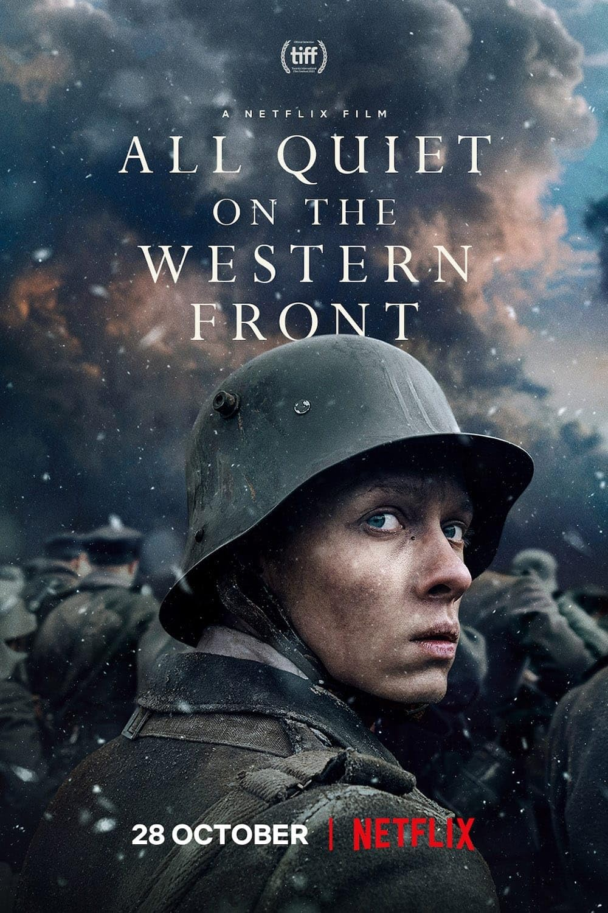

As alege oricand sa merg la munte si sa fac o drumetie. Imi place sa ma plimb, sa vad peisajele superbe si sa respir aerul curat.
Ciorba de coasta afumata e PREA BUNA. Cu bors sau dulce, nu conteaza, cred ca ramane mancarea mea preferata.

"Dead poets society" este un film care m-a emotionat deoarece stiu cum e sa iti doresti sa faci arta, dar lumea in care traim sa ti se puna in cale.
"All quiet on the western front" este un alt film care mi-a placut. Relateaza povestea lui Paul Baumer, un tanar soldat german care participa la Primul Razboi Mondial. Filmul acesta, de asemenea unul trist atrage un semnal de alarma asupra a ceea ce inseamna o astfel de conflagratie.

"A midsummer night's dream" este un film de comedie romantica bazat pe piesa de teatru cu acelasi nume din 1600 de William Shakespeare. Ce este atat de interesant la aceasta adaptare a povestii originale? Mie mi-au placut foarte mult imaginile. Tot filmul este plin de peisaje, incaperi si efecte vizuale superbe, iar la sfarsit este partea mea preferata in care personajele joaca o piesa de teatru care le scapa de sub control, dar se dovedeste a fi un succes amuzant.
De cand sunt mica desenez. Uneori pur si simplu simt nevoia sa iau in mana orice lasa o urma si sa schitez ceva. Imi plac artele plastice si orice m-as face in viitor nu cred ca voi putea renunta vreodata la ele(fie desen, pictura, sculptura sau alte derivatii).

Am inceput sa urmez niste cursuri de actorie de un an si m-am indragostit de aceasta meserie pe care o vad ca pe un stil de viata si ii admir pe cei care se dedica acesteia. Ma gandesc ca poate pe viitor voi lua in considerare facultatea de actorie.

Alegerea de a participa la proiectul "Breaking Barriers" a fost una buna. Din pacate nu am putut participa decat la cursurile pentru HTML, dar mi s-a parut foarte interesant ce am facut. Sincera sa fiu, inainte nu m-am gandit prea mult la cum se construieste un site sau cum se genereaza un link. Mi se pare important ca fetele sa fie sustinute in tehnologie deoarece ele sunt directionate in principal spre alte domenii si in prezent e bine sa stim cate ceva din toate pentru a avea mai multe posibilitati.